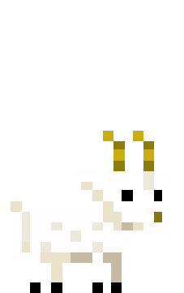
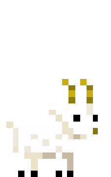

From the depths of a dark fairytale castle to a haunted company in a dystopian future, Baroque Decay is always able to use its characteristics 8-bit aesthetic to create creepy and surreal nightmares. The Count Lucanor is a game focused on plot and exploration, following the story of a child starting a journey to find his destiny. The game jumps from a fable to a proper nightmare, with multiple endings and many secrets. The gorgeous pixel-art cutscenes and all the elements typical of The Count Lucanor come back in the next game: Yuppie Psycho. The new game is bigger in any aspect, showing how Baroque Decay is improving as studio with each new game. It is important to remember that Baroque Decay’s games are not only focused on plot developing, but are also proper old-school survival horror games. Item management, balance of resources and even limited save points; all the elements of a proper survival horror are present in both games. Behind a comic or fairy-tale facade, the games are also really creepy and disturbing, with a set of nightmarish pixel-art creatures (check my article about the bestiary of Count Lucanor if you are interested). With Yuppie Psycho successfully released just at the end of the month, I had the possibility to interact with Francisco Calvelo, the director and art-designer of Yuppie Psycho and The Count Lucanor. He is the founder of Baroque Decay and the responsible of the gorgeous pixel-art behind the games. Together with the talented Francisco (who prefers Fran), we talked about the past, the future and some hidden details about Baroque Decay’s games. If you are curious to know about the future of Yuppie Psycho or who was the first protagonist of Count Lucanor, I suggest you to read the following interview.
A1: I (Fran Calvelo) was working on an office job as graphic designer, and in 2013 I decided to quit the job to make videogames. I met Maxime Caignart (Coder) online, and both began to work on a horror game for mobiles called “Catequesis”, and later on “The Count Lucanor”. Regarding the name of the company, I love the baroque art and the “Decay” is always the most interesting aspect of anything. Instead of the glory days, the juicy stuff is always in the decay.
A2: So much inspirations that is difficult to point only a few. We love the work of David Lynch, Shinya Tsukamoto, Cronenberg, Junji Ito, Shintaro Kago, Maruo, and we are lovers of Anime, like Jojo Bizarre adventure, and thousands of other series. In games we love Zelda, Resident Evil, Silent Hill. But I think our bigger inspiration is Deadly Premonition.
A3: I spend around 2 weeks for each minute of cutscene. It’s a hard job, but I think it gives a nice reward to the player. Even now, they are part of the aesthetics of the game. Sadly it is too much work to keep such a good quality for the whole game, but at least with those small cutscenes the players can get immersed in a anime-ish story.
A4: We had to pause our previous project “Catequesis” because was too ambitious, so we finally decided to just make a small game with few mechanics. I found an old manga tale in a second hand store, about a goatherd that lost a goat and found a castle with a goblin in it. That was the spark to begin the project. We used the name “Count Lucanor” because was a Spanish medieval fairy tale compilation, and also the sound of “Lucanor” was a bit similar to “Alucard”.
A5: At first the main character was going to be the goatherd, but we had some technical issues controlling the goats, so we preferred to split that into another character. Well, in a lot of fairy tales there are goats and goatherds, so I just wanted to make them part of the nightmare, in the best possible way. And for the character, I just wanted to picture someone nice and funny, but at the same time a bit dangerous. Some kind of metaphor on those friends that are older than you when you are a little kid. They are the fun, but they usually do forbidden stuff.
A6: I’m a little bit bored of the medieval, “sword and shield” setting. So after watching Gremlins 2, which has a very similar setting, I decided to go full on a corporate office environment. It is not hard to add horror in any setting. The trick is just to transform the usual stuff of that environment in a twisted monster. Once the player can’t really be sure of what is secure and what is dangerous, the horror is done.
A7: The problem is that we base our gameplay too much on the story. So the player is playing the game especially to discover the story. Making a good story, with good cutscenes, situations, animations and characters is hard. It is much harder than basing your game on a strong game mechanic. We also wanted to do something bigger in the same time, but we ended up working double of time than with Lucanor.
A8: I think it was the Camerlengo, from The Count Lucanor. Again a late addition to the game. We added this “Mr. X” enemy that chases you around the castle. It was really fun to see the reaction of the players when they heard the steps of the Camerlengo, or the sentences he says to the player when he is hiding under the tables.
A9: Who knows! But surely it will be something similar. It is interesting, we didn’t have that mechanic in Lucanor at first. We had automatic saves, but after the first beta testing we saw that the players played with no fear that way. So we added the “coins and the fountain” save system. And after that, all the players were telling us that they loved that save system. So we ended up with something iconic to keep for our next games.
A10: Yes. There are always areas or characters that we have in mind, or even quests that we develop for a bit until we realize that we will not be able to finish them. It is very hard to work on such long projects, sometimes the development goes out of your hands and you don’t have other solution than to cut and adapt what you have.
A11: Thanks! We are surprised for the good welcome that the game is having. So we want to reward the success by adding all the stuff we had to cut in a free DLC. So this year the plan is to work on that and on the Consoles port. We are thinking a lot on Catequesis, several fans ask for it. But it’s very outdated now, so we need to figure out a good way to renew it to feel fresh again.


 



Cut
pixel
an ancient spanish book
YUPPIE
PSYCHO
s o u l
save your
Y!